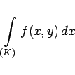
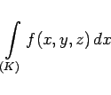
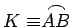
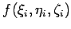
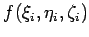

Kurvenintegral 2. Art oder Integral über eine Projektion (auf die x-, y- oder z-Achse) wird das bestimmte Integral
|  | (8.110a) |
oder
|  | (8.110b) |
genannt, wobei f(x,y) bzw. f(x,y,z) eine in einem zusammenhängenden Gebiet definierte Funktion von zwei bzw. drei Veränderlichen ist und die Integration über die Projektion eines ebenen oder räumlichen durch seine Gleichung vorgegebenen Kurvenbogens  auf die x-, y-, oder z-Achse durchgeführt wird. Der Integrationsweg liegt in dem gleichen Gebiet. Das Kurvenintegral 2. Art wird ebenso gewonnen wie das Kurvenintegral 1. Art, jedoch mit dem Unterschied, daß beim dritten Schritt die Funktionswerte  bzw.  nicht mit den Längen der Elementarbogenstücke
bzw.  nicht mit den Längen der Elementarbogenstücke  multipliziert werden, sondern mit ihren Projektionen auf eine der Koordinatenachsen (s. Abbildung).
multipliziert werden, sondern mit ihren Projektionen auf eine der Koordinatenachsen (s. Abbildung).